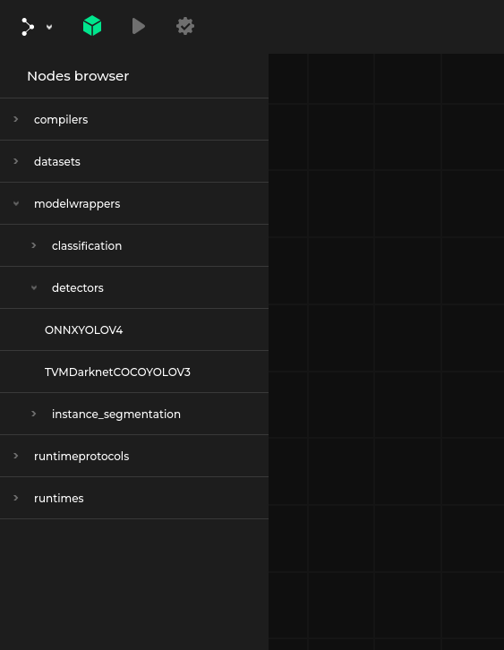
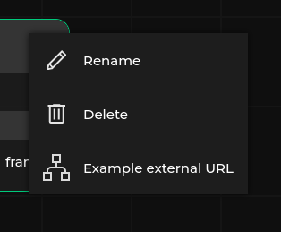
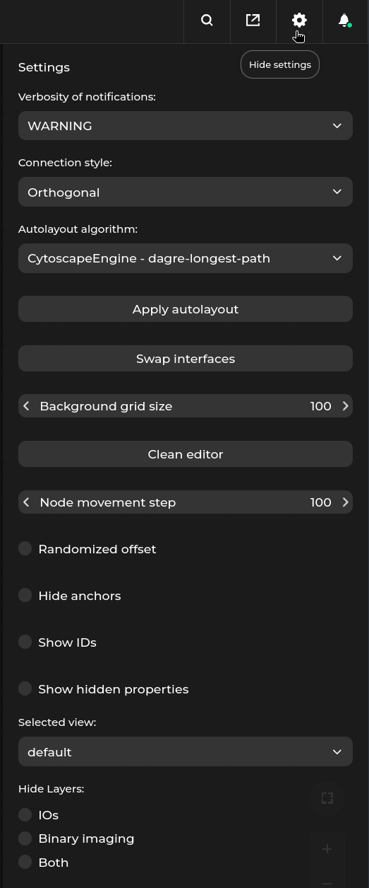
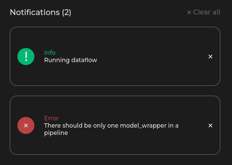
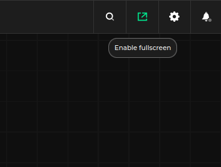
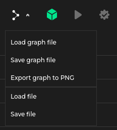
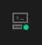

Front-end features¶
Graph manipulation¶

On the left side there is a node palette (which can be turned off or on using the green icon in the upper left corner).
To add a new node to the graph, click the node in the palette and drag it to the editor.
You can also select existing nodes and copy and paste them using ctrl-c and ctrl-v keyboard shortcuts.

In the upper right corner of each node there is a context menu toggle. It contains the following options:
Rename- Changes instanceName of the node. More details regarding node naming can be found in the ‘instanceName’ field of dataflow formatDelete- Deletes the node from the dataflow. Another way of deleting nodes is to select and press theDeletekey.Additional, user defined URLs. More details in the URL specification
Scroll lets you to zoom in and out. Left-clicking and dragging the editor background allows you to move around the editor area.
Left-clicking on a node allows you to select and drag the node within the editor area. Pressing the ctrl key while moving a node allows you to align the node with another one along some axis.
To create a connection, left-click a node’s connector and connect it to a connector (of a matching type, see Specification format) on another node. Double left-click on an existing connection removes it.
Settings¶

On the upper right corner of Pipeline Manager window there is a gear icon toggling settings tab. In the tab following options can be found:
Connection style- Switch the style of the connection betweenorthogonalandcurvedAutoLayout algorithm- Choose the algorithm for automatic node placement. Autolayout algorithm is triggered in the following situations:When loading the dataflow autolayout is used to place nodes without the
positionparameter set. Dataflow load can be triggered either via external application or choosing theLoad graph fileoption. In this case autolayout is applied to both the main graph and the nodes in the subgraphs.By pressing the
Apply autolayoutbutton in the settings tab. In this case autolayout is applied to the entire graph.
Background grid size- Sets the size of single grid cell visible in the backgroundNode movement step- Sets the minimum step size which can be taken along each axis when moving node.Center- Pressing this buttons moves the viewport to the center of graph and sets the zoom level so that whole dataflow is visibleHide layers- Metadata allows to specify layers for a certain set of interface types and connections. Toggling this checkbox allows to hide connections belonging to said layer
Notifications¶

Pipeline Manager provides notifications describing errors occurring in:
The front end, such as invalid input specification, or invalid dataflow
The back end (see Communication with an external application)
During pipeline development or execution, notifications can display various messages to the user.
Full screen¶

Near the settings tab, there is a full screen icon. Clicking it will expand the Pipeline Manager window to full screen. Note that this feature may be disabled during embedding Pipeline Manager in an external application, make sure to allow full screen mode.
For example, in the case of embedding Pipeline Manager in an iframe, the allow="fullscreen" attribute must be set:
<iframe src="https://url" allow="fullscreen">
<p>Your browser does not support iframes.</p>
</iframe>
Editor menu¶

Depending the application’s mode (static-html or server-app), the following options will be available in the Pipeline Manager menu:
Load specification- lets the user load a specification file describing the nodes that can appear in the graph (see Specification format)Note
It appears only in the
static-htmlbuild mode, where a specification is not delivered by a third-party app.Load graph file- lets the user load a graph specification in Pipeline Manager’s internal format (see Dataflow specification).Save graph file- Saves the graph currently stored in the editor into JSON using Pipeline Manager’s internal format.Export graph to PNG- Saves the graph currently stored in the editor as PNG imageLoad file- lets the user load a file describing a graph in the native format supported by the third-party application using Pipeline Manager for visualization.Note
It appears only in the
server-appbuild mode, since the third-party app performs conversion from its native format to the Dataflow formatSave file- saves the current graph in a native format supported by the third-party application using Pipeline Manager for visualization.Note
It appears only in the
server-appbuild mode, since the third-party app performs conversion from the Dataflow format received from the editor to its native format.
Working with the server¶
When Pipeline Manager works in the server-app mode, it is connected to an external application, making it possible to manipulate or execute a graph as well as save and load files in the application’s native format.

Status of the connection is displayed in the upper right corner of the editor. The color of the icon indicates the status of the connection with the server:
Red- No connection with the server.Green- Connection with the server is established.
Extrnal application may deliver additional features by providing additional buttons in the editor menu. More details can be found in the Specification format section.
Testing the front-end features¶
The best way to test the front-end features is to use the pipeline_manager.frontend_tester.tester_client, Third-party server example.